Tutorial: Using bolted connections
Bolt connectors transfer tensile, bending, and thermal loads from one part to another.
You can use the Simulation tab→Connectors group→Bolt command  to simulate bolted connections between two part faces, without having to model the
fastener itself.
to simulate bolted connections between two part faces, without having to model the
fastener itself.
Most of the information required to create a bolt connector is inferred from the elements you select. If your 3D model contains bolts and other fasteners, you can hide them in PathFinder and just use the part holes to generate the bolt connectors in the FEA model. Selecting holes rather than modeled bolt components yields a much faster processing time for meshing and solving.
If you select a hole, the software determines the connected parts by finding cylindrical holes along a shared axis in other parts. The top and bottom faces are determined from the connected face(s) at either end of the hole. The type of bolt defaults to no-press fit. The diameter of the head and nut are calculated from the diameter of the selected hole.

In this tutorial, you explore how to apply a bolt connection within an assembly, and review the stresses associated with the connectors in the Simulation Results environment.
-
Open FE_pipe_connect.asm.
Simulation models are delivered in the \Program Files\Siemens\Solid Edge 2023\Training\Simulation folder.

-
Define the study.
-
Select the Simulation tab→Study group→New Study command.

-
In the Create Study dialog box, select the following:
-
Study type=Linear Static
-
Mesh type=Tetrahedral
-
Click Options.
-
In the Results Options section, under Elemental, select Force.
-
-
Notice the Define command in the Geometry group is active.

-
Select both parts and click Accept.
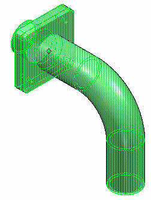
-
-
-
Define a force on the pipe flange.
-
Select Simulation tab→Structural Loads group→Force.
-
Select the end face of the pipe.
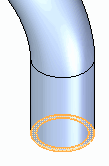
-
Type 1334 N for the force value. This is equal to a 300 pounds-force load.
You may need to select the Flip button to ensure the force direction is downward.
-
Right-click to accept and then click to finish.
The force is placed.
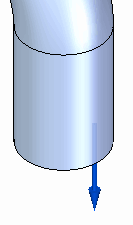
-
-
Add fixed constraints to the flange.
-
Rotate the view to see the back side of the mating flange.
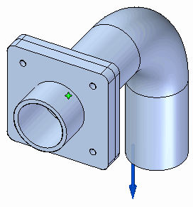
-
Select Simulation tab→Constraints group→Fixed, and then select the outer cylindrical and end faces.
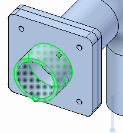
-
Right-click to accept, and then click to finish.
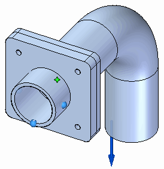
-
-
Define assembly connectors between the pipe flange and the mating flange.
-
Choose Simulation tab→Connectors group→Manual command .
-
On the command bar, select No penetration as the connector type.
-
Use QuickPick to select the front face of the pipe flange in pipe_flange.par as the target face, and then right-click to accept.
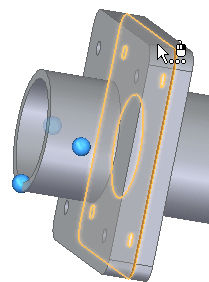
Note:You also can turn off the display of the mating flange mating_flange.par.
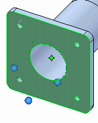
-
Use QuickPick again to select the inside face of the mating flange in mating_flange.par as the source face, and then right-click to accept.
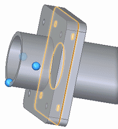
Note:You also can turn on the mating flange and turn off the pipe flange pipe_flange.par. Rotate the model so you can view the front face of the mating flange.
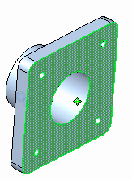
-
Click to finish.
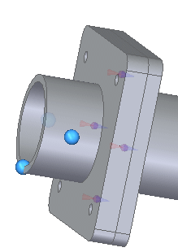
-
-
Define a bolt connection.
-
Choose Simulation tab→Connectors group→Bolt command
. -
On the command bar, ensure the Selection Type is set to Single Hole .
-
Select the first bolt hole in the pipe flange as shown below.
For this activity, the default values are acceptable for bolt and nut diameter and for prestress force.
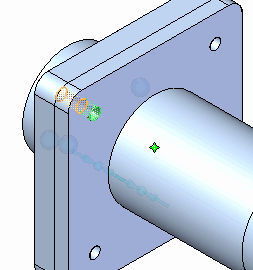
-
On the command bar, click Multiple Bolts .
Select the three remaining holes in the flange.
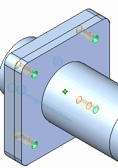
Tip:If your part has many holes of the same size, you can use the Multiple Bolts option to select them. This also makes it easy to edit all of the bolt connectors at once.
-
Right-click to accept and click to finish.
-
-
Mesh the assembly—Select Simulation tab→Mesh group→Mesh, and click the Mesh button.
The entire assembly is meshed.
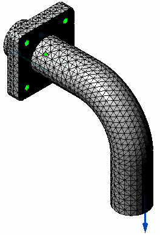
-
Solve the study—Select the Simulation tab→Solve group→Solve command.
After a few moments, the results are displayed in the Simulation Results environment.
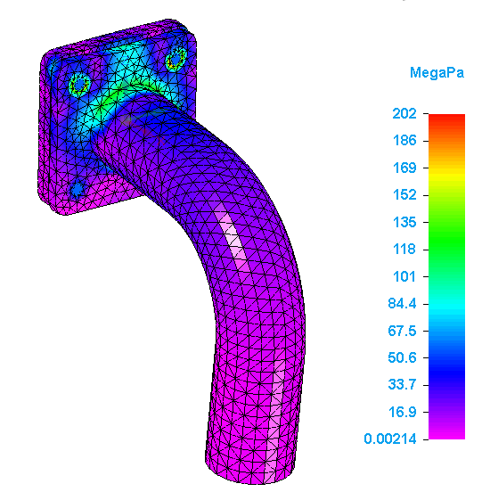
Note:If the study does not solve and an NX Nastran warning message is displayed, edit the study processing parameters using the Modify Study dialog box. Change the Geometry check option to Warning only and then solve again. For more information about this option, see Advanced Options for studies.
-
Review the bolt connector force results—In the Simulation Results pane, under the Results node, double-click Bolt Connector Forces.
The Bolt Connector Forces Results table is displayed. Because you used the Multiple Bolts option to create the bolted connections, the table identifies all of the bolts in the Connector Name column as Bolt Connection 1, but it reports the unique stresses for each of the simulated bolt connections.
For more information, see Bolt connector simulation results.
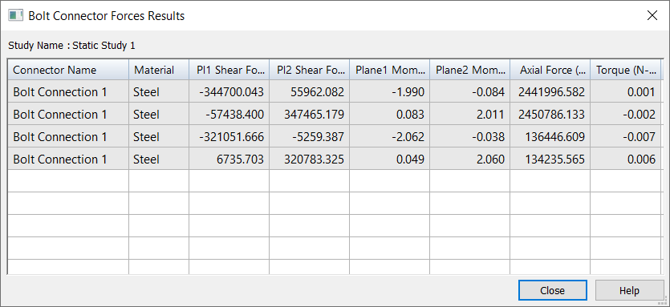
-
Close this file.